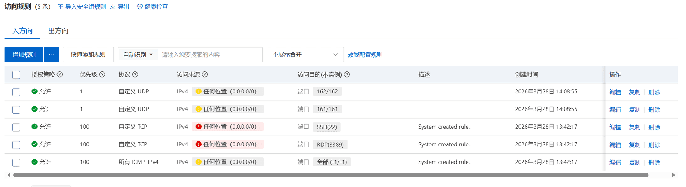

SNMP 协议实验一：配置 SNMP 基础通信
这是我研一期间导师教的课程《计算机网络管理》中的一个选做实验，当时弄了将近一天，结果一直没有通，后来就放弃了。五年之后了，居然闲着没事想起来这个事情，再试试之后完成了。时间过得真是快，感觉五年前就在昨天一样。
准备
两台机器选择
推荐还是直接临时买两个云服务器，反正也不是很贵，这样也不会破坏环境，而且还有公网 IP，很适合做实验。防火墙记得弄好。
这里我就直接参考这篇文章，其实里面的新建用户不用做，直接 root 反而更加方便，毕竟只是实验。
ufw allow OpenSSH
ufw enable
上层管理开放端口
不仅如此，云服务器上面的管理设置也要开端口。我一开始没开端口结果一直连不上。可以直接无脑开 UDP 就行，这就是临时买两台服务器的好处，不用担心安全问题。或者就只开 161 和 162 端口。

其他辅助
一些做实验之后的善意提醒：
- 最好买国内的服务器，我一开始用的 Digital Ocean，实在太卡了，太影响效率和心情了，越影响心情效率越低，恶性循环。
- 使用 SSH 免密登录，后面很有可能要经常登入登出。
- 使用
ble.sh这个 bash 自动补全工具，后面 SNMP 的命令非常长，这个确实很有帮助。直接安装如下：
# Quick INSTALL to BASHRC (If this doesn't work, please follow Sec 1.3)
git clone --recursive --depth 1 --shallow-submodules https://github.com/akinomyoga/ble.sh.git
make -C ble.sh install PREFIX=~/.local
echo 'source -- ~/.local/share/blesh/ble.sh' >> ~/.bashrc
SNMP 简要说明
这里还是简短说一下 SNMP 协议，就把他理解成管理员和被管理机器就行了。管理员叫 manager，被管理员叫 agent，平时都是 manager 向 agent 问东西，比如你启动多久了等等。偶尔 agent 如果发现自己报错，也会主动上报给 manager，这个叫做 trap，这个配置实现在另外一篇文章单独写。
其实就是一层规范化的应用协议而已，没有什么特别之处。
配置 SNMP manager
安装软件
sudo apt install snmp snmp-mibs-downloader
修改配置文件，这里的 MIB 就是按照 SNMP 协议的规范翻译一些名词，比如原来发送 1.3.6.1.2.1.1.5.0 这种奇怪的数字，现在可以替代为 sysName.0。
# /etc/snmp/snmp.conf
# As the snmp packages come without MIB files due to license reasons, loading
# of MIBs is disabled by default. If you added the MIBs you can reenable
# loading them by commenting out the following line.
# 这里注释掉
#mibs :
为什么是注释掉，才是启用 MIBS，通常来说不都是不注释才启用吗
mibs: 它的意思不是“启用 MIB”，而是：把 MIB 列表设为空（= 不加载任何 MIB）；所以注释掉之后，程序就会回到默认行为：
自动加载系统里的 MIB
所以变成启用状态，即使用了 snmp-mibs-downloader 这个工具。
然后就弄好了，什么也不用动。因为 SNMP 中 manager 向 agent 发消息，所以后面 manager 使用 snmpget 等等命令发消息的时候，命令执行时才加载配置文件，所以这里没有什么后台要运行的任务。
配置 SNMP Agent
首先配置中修改为监听任意地址
# /etc/snmp/snmpd.conf
# Listen for connections from the local system only
#agentAddress udp:127.0.0.1:161
# Listen for connections on all interfaces (both IPv4 *and* IPv6)
agentAddress udp:161,udp6:[::1]:161
然后建立一个 snmp user，snmp 通信要求通信的时候要有一个用户，而不是简单的指定 IP 和端口，就理解成当前的各个通信软件就行了。这里我们创立一个临时用户 bootstrap，密码就叫 temp_password，密码这里可以自行修改。
# /etc/snmp/snmpd.conf
createUser bootstrap MD5 temp_password DES
这里为什么使用临时用户，继续往下看一直到结尾就知道了
然后配置用户权限，我们临时用户叫 bootstrap，假设我们最终用的名字叫 demo：
# /etc/snmp/snmpd.conf
rwuser bootstrap priv
rwuser demo priv
最后重启服务，然后防火墙打开 161 端口，即允许 manager server 的 161 端口访问这台机器。
sudo systemctl restart snmpd
sudo ufw allow from manager_server_ip_address to any port 161
测试通信
现在已经配置完毕了，测试通信，即 manager 向 agent 发送信息：
snmpget -u bootstrap -l authPriv -a MD5 -x DES -A temp_password -X temp_password agent_server_ip_address 1.3.6.1.2.1.1.1.0
这里的 1.3.6.1.2.1.1.1.0 就是 SNMP 协议的 OID，就是管理员要获取的信息，这个意思是 displaying system information，正确的结果类似：
SNMPv2-MIB::sysDescr.0 = STRING: Linux agent 4.15.0-66-generic #75-Ubuntu SMP Tue Oct 1 05:24:09 UTC 2019 x86_64
上面 配置 SNMP Manager 中提到我们有 MIBS 的支持，所以这里可以直接使用 sysDescr.0 这个 MIB 来获取系统信息：
snmpget -u bootstrap -l authPriv -a MD5 -x DES -A temp_password -X temp_password agent_server_ip_address sysUpTime.0
得到类似结果：
DISMAN-EVENT-MIB::sysUpTimeInstance = Timeticks: (53309) 0:08:53.09
设置正常用户
前面提到 bootstrap 是临时用户，现在来演示正常应该如何操作，我们通过 bootstrap 用户通信，通信内容是：建立一个 demo 用户：
snmpusm -u bootstrap -l authPriv -a MD5 -x DES -A temp_password -X temp_password agent_server_ip_address create demo bootstrap
得到结果：
User successfully created.
现在我们有了 demo 用户，它的密码也是 temp_password，我们可以修改掉，修改成 new_password：
snmpusm -u demo -l authPriv -a MD5 -x DES -A temp_password -X temp_password agent_server_ip_address passwd temp_password new_password
得到结果：
SNMPv3 Key(s) successfully changed.
测试一下通信，就是上面一章节中的 bootstrap 替换成 demo：
snmpget -u demo -l authPriv -a MD5 -x DES -A new_password -X new_password agent_server_ip_address sysUpTime.0
然后我们就可以删除 bootstrap 这个临时用户了，具体操作在最后再谈。现在我们来评估这种安全性。
回顾及安全性分析
还是强调，这些通信都是由 manager 发起，即 manager 是我们的管理器，安全性很高。agent 是路由器之类的，它被人任意使用没有关系。
- manager 首先使用
bootstrap和对应的密码连接 agent，让他建立一个demo用户； - manager 使用
demo修改密码； - manager 使用
demo和对应的密码连接 agent，删除bootstrap用户； - manager 使用
demo和对应的密码连接 agent，进行通信。
agent 里面只有 bootstrap 和它的明文密码，agent 是怎么知道 demo 用户的？在 /var/lib/snmp/snmpd.conf 中：
usmUser 1 3 0x80001f8880e13a533c7d6cc76900000000 "demo" "demo" NULL .1.3.6.1.6.3.10.1.1.2 0x018ea09d0b4caa6f7707d5f44774036d .1.3.6.1.6.3.10.1.2.2 0x018ea09d0b4caa6f7707d5f44774036d 0x
usmUser 1 3 0x80001f8880e13a533c7d6cc76900000000 "bootstrap" "bootstrap" NULL .1.3.6.1.6.3.10.1.1.2 0x697b326cd929726752a592fba5de1cd6 .1.3.6.1.6.3.10.1.2.2 0x697b326cd929726752a592fba5de1cd6 0x
setserialno 490637702
只不过这是加密后的密码，所以当我们删除掉 bootstrap 之后，agent 上并没有什么可以被攻击的信息了（只有加密的密码），这就是安全性的保证。
这也是临时用户 bootstrap 存在的意义
其他
如果为了方便，我们可以在 manager 中配置文件：
# ~/.snmp/snmp.conf
defSecurityName demo
defSecurityLevel authPriv
defAuthType MD5
defPrivType DES
defAuthPassphrase new_password
defPrivPassphrase new_password
原来的方式：
snmpget -u demo -l authPriv -a MD5 -x DES -A new_password -X new_password agent_server_ip_address sysUpTime.0
现在的方式，比较方便了：
snmpget agent_server_ip_address sysUpTime.0
删除 bootstrap 用户的做法：
# /etc/snmp/snmpd.conf
# comment or remove the following lines
#createUser bootstrap MD5 temp_password DES
#rwuser bootstrap priv
然后重启 snmp：
sudo systemctl restart snmpd
如果想要完全删除：
snmpusm agent_server_ip_address delete bootstrap
得到：
User successfully deleted.
总结
这就是第一部分的内容。五年前，我用自己笔记本 ArchLinux 系统和实验室配的台式机 Windows 系统尝试做实验，结果折腾了快一天，差了很多资料，各种千奇百怪的论坛，但还是没有成功。五年之后直接两台云服务器，然后非常非常顺利地就完成了，用时不到一小时。我觉得这就是更加务实了吧，没有什么奇奇怪怪的技术洁癖（当时可能觉得一定要用身边的机器才算完美）。
下一篇介绍如何进行 SNMP Trap 通信，这个是反过来的，是 agent 向 manager 发送信息。